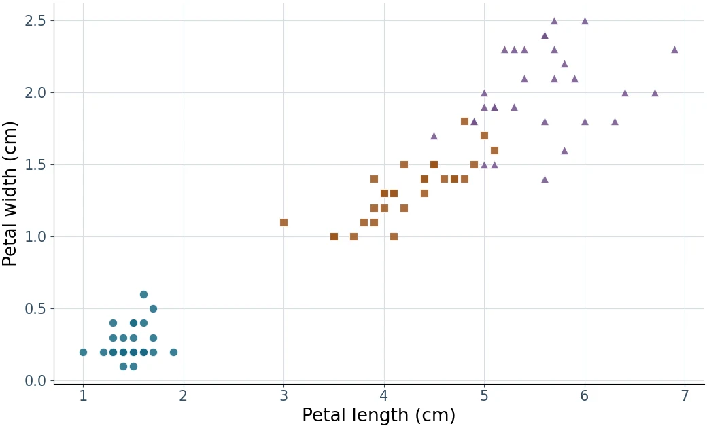
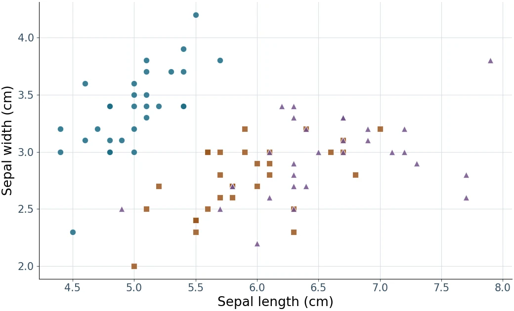

Artificial intelligence AI
The field concerned with implementing capabilities such as reasoning, search, perception and learning in computers.
Example An expert system uses knowledge and rules to infer possible causes of an equipment fault.
Explore how AI learns from data, how a model uses a retrieved document to answer a question and how an organisation checks the result.
A training coordinator asks, “Who reviews this report?” The model writes an answer, the retriever finds the current document and a person checks the evidence. Follow each part of that process below.
Machine learning finds patterns in examples. Deep learning uses multiple layers of a neural network to learn features. Use the iris classification exercise to distinguish training data from validation data.
A large language model (LLM) applies deep learning to language. Transformers capture relationships in context, and a generative LLM builds a response by predicting successive tokens.
Represent the question and document passages as embeddings, then compare their similarity. Retrieval-augmented generation (RAG) passes the retrieved text to the model. Try excluding a superseded edition and see how the evidence changes.
Orchestration coordinates retrieval and generation. An execution harness manages the agent’s tools and permissions. An evaluation harness checks whether the system still finds the right evidence after a document changes.
An artificial intelligence management system (AIMS) helps an organisation set AI objectives, assign responsibilities and manage risks and performance. In this example, identify who approves the current document and who acts when an answer is wrong.
Compare an AI system and an AIMSISO/IEC 42001 clause listAI research has expanded from representing knowledge as rules to learning from data, generating language and using external tools. Explore the questions addressed by these projects and standards.
The Dartmouth summer research project explored whether machines could carry out learning and reasoning. Dartmouth account
DENDRAL used chemists’ knowledge to infer molecular structures consistent with observed data. Computer History Museum
Rumelhart and colleagues showed how backpropagation adjusts weights across layers to learn useful features. Backpropagation paper
AlexNet used a convolutional neural network and a large image dataset to reduce the error rate in the ImageNet classification competition. AlexNet paper
Researchers proposed an attention-based architecture for machine translation. Many large language models now use this architecture. Transformer paper
The RAG study explored answering knowledge-intensive questions by supplying a generative model with information retrieved from external documents. RAG paper
ReAct showed how a language model can use information from its environment to guide subsequent reasoning and actions. ReAct paper
ISO/IEC 42001 set out requirements for establishing, operating and continually improving an AI management system. ISO standard overview
The Model Context Protocol introduced a common way for AI applications to connect to resources and tools. MCP announcement
Anthropic described separating the model harness, tool execution environment and session records in a managed agent system. Agent design case study
Machine learning is a field within AI. Deep learning is a set of machine learning techniques that uses neural networks with multiple layers.
The field concerned with implementing capabilities such as reasoning, search, perception and learning in computers.
Example An expert system uses knowledge and rules to infer possible causes of an equipment fault.
A model learns patterns in data to classify a new input or predict an outcome.
Example A decision tree classifies a flower from its measurements.
Successive layers of a neural network transform the input and learn useful representations for a task.
Example A neural network learns shapes in photographs to distinguish types of objects.
Artificial intelligence (AI) covers techniques for learning, reasoning and generation. An AI system brings together components such as models, data, a user interface and access controls to serve a specific purpose. An artificial intelligence management system (AIMS) sets organisational policies and objectives for developing, providing or using AI and governs responsibilities, risks and performance.
Inputs paired with known labels
Learn the relationship between inputs and outputs to predict a category or numerical value for a new input.
Example Classify an iris species or predict the service life of a component.
Unlabelled observations
Find groups or underlying structure in observations. Common approaches include clustering and dimensionality reduction.
Example Group customers by usage pattern and interpret the characteristics of each group.
Rewards from interaction with an environment
An agent observes states and selects actions. It learns a policy that increases the expected cumulative reward over time.
Example A robot learns a policy for reaching a destination by trying different movements.
Classify an iris using its sepal and petal length and width. The public dataset contains 150 rows, with 50 observations for each of three species and no missing values.
species gives the species:sample_id to identify each row and split to see its training, validation or test assignment.| ID | Sepal (cm) | Petal (cm) | Species | ||
|---|---|---|---|---|---|
| Length | Width | Length | Width | ||
| 1 | 5.1 | 3.5 | 1.4 | 0.2 | setosa |
| 51 | 7.0 | 3.2 | 4.7 | 1.4 | versicolor |
| 101 | 6.3 | 3.3 | 6.0 | 2.5 | virginica |
For each species, 30 rows are assigned to training, 10 to validation and 10 to testing. Rows with identical values for all four measurements are kept together.
Fit model parameters and preprocessing on the training set, select settings using the validation set, then evaluate the chosen model on the test set.
Dataset preparation Record the prediction target, labelling criteria, measurement units, missing or duplicate values, source and permission to use the data.
Adapted from R. A. Fisher (1936), Iris, UCI Machine Learning Repository. The exercise is shared under CC BY 4.0. It preserves the original measurements in bezdekIris.data and adds column names, row IDs and split assignments. Species labels are shortened to names such as setosa.
The plots use 90 training rows. Each point represents the length and width of one flower. Equal measurements appear in the same position.


Use a fictional set of training documents to find passages relevant to a question and check the current source before answering.
An LLM learns language patterns from large amounts of text and other data. A generative LLM used in a chatbot processes the query and its context as tokens and generates subsequent tokens in sequence.
Use cases include summaries, questions and answers, and drafts. Check factual claims against original sources.
An embedding represents text as a vector of numbers. Apply the same embedding model to the question and document passages, then compare the vectors to identify relevant candidates.
sim(q, d) = (q · d) / (‖q‖ × ‖d‖)
Cosine similarity divides the dot product of two vectors by the product of their lengths. For nonzero vectors, its range is −1 to 1. Vectors pointing in similar directions have a higher score.
A vector database stores embeddings with metadata such as document IDs, pages, editions and access rights. It retrieves passages whose vectors are close to the query vector.
Example Look up the passage and page referenced by a search result to show its source in the answer. With an approximate nearest-neighbour index such as HNSW, tune retrieval speed and recall together.
A decoder-only generative model uses the input and previously generated tokens as context to calculate a probability distribution for the next token.
Append the chosen token to the context and repeat until a stop token or length limit is reached.
RAG adds retrieved text to the input context at inference time. The model weights stay fixed during this process.
Retrieve relevant passages, add them to the model context and generate a response based on that evidence.
Query the index to find evidence relevant to the question.
Four fictional documents have two-dimensional example vectors. The exercise ranks them by cosine similarity and displays a predefined answer or abstention message based on the retrieved evidence.
Question Who reviews the exercise report? Query vector (1, 1)
The current guide ranks first. The operations coordinator reviews the report. See Exercise Operations Guide v2, page 3.
| Document and evidence | Vector Similarity | Retrieval rank |
|---|---|---|
| Exercise Operations Guide v2 Page 3 · currentThe operations coordinator reviews the exercise report. | (2, 1)0.949 | Rank 1 |
| Exercise Checklist v1 Page 2 · currentParticipants submit their report at the end of the exercise. | (1, 0)0.707 | Rank 2 |
| Training Application Guide v1 Page 1 · currentApplications are processed in the order received. | (1, −1)0.000 | Outside top results |
| Exercise Operations Guide v1 Page 3 · supersededThe instructor reviews the exercise report. | (1, 1)1.000 | Excluded by edition filter |
Operational example Orchestration orders retrieval and generation. The execution harness enforces access to approved sources and tools, then logs document IDs, editions and the answer or abstention. After a model or index change, the evaluation harness repeats the questions to check retrieval, citation and abstention.